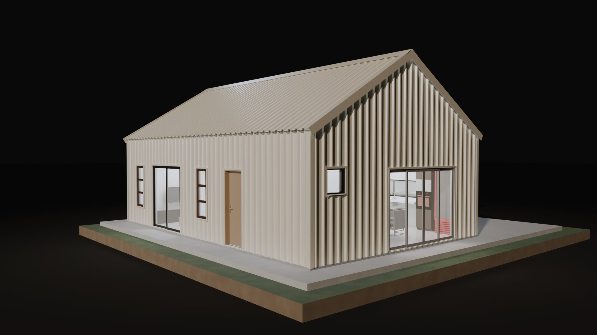
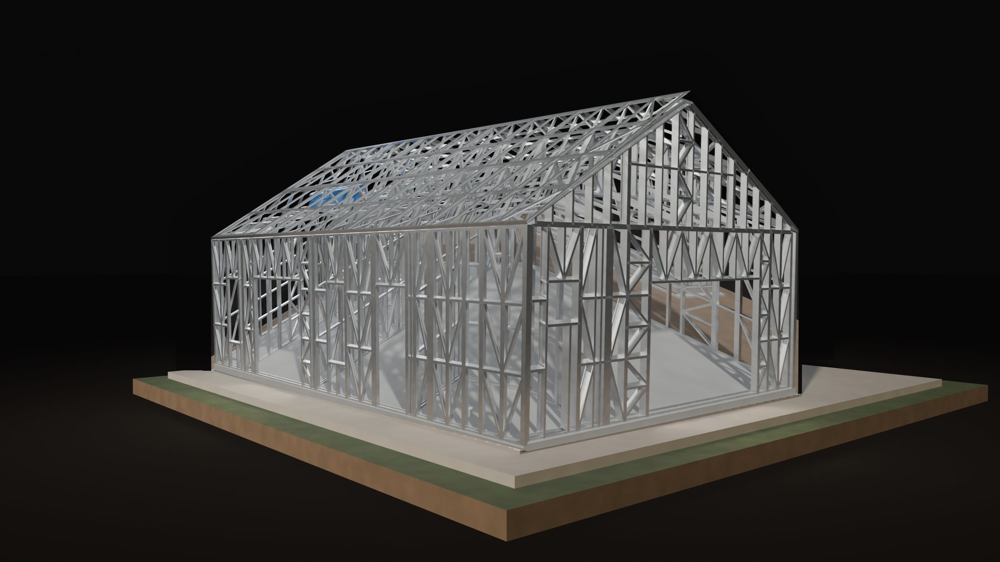

Luis Gustavo Maiaengenheiro civil · CREA-SP 5071068977
Projeto, execução e engenharia tributária, com uma única responsabilidade técnica.
Estrutura × pronta


estruturaprontaChalé Acolherarraste para ver a estrutura
Obras


Engenharia tributária
O INSS de uma casa de 150 m² em steel frame, com e sem planejamento.
R$ 8.832
aferição indireta, sem planejamento
R$ 2.650
com enquadramento e notas corretas
R$ 6.182
de volta ao orçamento da obra